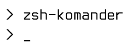

Главная
zsh-komander - это минималистичная тема командной оболочки "zsh".
Суть её в том что вместо того чтоб захламлять консоль огромными и жирными промптами, как допустим в oh my zsh часто бывают излишне больше индикаторы запросов, zsh-komander делает просто маленький промпт: _.